1926—The New-Way Course in Fashionable Clothes-Making
Lesson 4—Seams
A Lesson on Seams
The aim of this lesson is to teach you the different kinds of seams that are used in the making of fashionable clothes. Every good dressmaker knows and uses these various seams to achieve smart finishing touches and neat edges. By the time you have completed this lesson, you will be able to make each one of these seams without any trouble whatever. We have taken particular pains to simplify them as much as possible and to make them all easy to follow.
The seam, you know, is the corner-stone of all good dress construction—just as the outline sketch is the base upon which all good art work is built. Without the right kind of seams the dress will not hang correctly, it will not appear smart or well-finished. Without the right kind of seams, the blouse will not withstand many washings and re-washings, and it will soon lose the smartness of its style. A dress may be beautiful when you finish it, but without the right seams in the right places, its beauty will be short lived
So determine right now to master the various seams that you will need to use in your clothes-making. There are not so many of them, and it will not take you long to know them all. Of course it would be much more interesting if we began to make a little blouse or camisole in this lesson, but really wouldn't it be rather impractical to make a finished garment before we know even how to join the edges of the material together—before we know the just-right methods of seaming?
A well-known modiste once very wittily remarked, "As you seam, so shall you sew!" Let us make this our motto, and let us learn to make the different kinds of seams so perfectly that we will have no trouble at all in joining materials together when we are ready to make pretty things to wear.
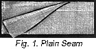Plain Seam
- Simplest of all seams, and the one upon which most others are based, is the plain seam. You will have no difficulty in making this seam whatever. It is used wherever a simple flat seam is required. (Fig. 1.)
- First baste the edges of the materials together being sure that they are kept even.
- Decide just how deep you want your seam to be, and then stitch either by hand or machine on a straight line across the entire length of the materials to be joined together. Use a simple running stitch for fine materials, or a back-stitch where great strength is needed.
- Now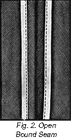 the 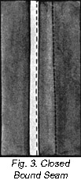seam may be pressed open and both edges bound. This makes a neat, open-bound seam. (Fig. 2.) Or it may have the edges both sewed in the same binding, making it a closed bound seam. (Fig. 3.)
- In materials that do not fray badly, the edges may be overcast instead of bound. Each edge of the seam may be overcast separately, or both together. When the material is of close weave, such as serge or broadcloth, the edges may be simply notched. Or if the material is very fine, the edges may be turned together and over-handed.
- You will find the plain seam very useful in skirts, blouses and sleeves. Use it whenever you want a seam that lies flat.
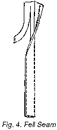Fell Seam
- On underwear and wherever a neat, flat seam is desired the fell seam is most appropriate. It is made in the following manner:
- Stitch the two pieces of material to be joined together as for a plain seam, but be sure to make your stitching three-eighths of an inch from the edge. This first plain seam should be on the wrong side of the material.
- Trim off one of the edges above the stitching to one-eighth of an inch, leaving the other three-eighths.
- Now make a narrow under turn on the wider edge, and press this wide turned edge flat against the material. It will completely cover the narrow edge.
- Hem the turned edge to the material with the hemming stitch you learned in the last lesson. You will have a neat seam that lies perfectly flat against the material.
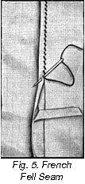French Fell Seams
- The French fell seam is probably the daintiest and finest seam of all. That is what makes it so appropriate for finishing pretty baby clothes. Use this type of seam also on the fine underthings you will make at home later.
- Proceed exactly as you did for the ordinary fell seam, sewing and trimming down the edges in the same manner.
- After making narrow under turn, bring the edge of the wide portion to the line of stitching, baste and finish with hemming stitch. No stitching shows on the right side.
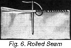Rolled Seam
- The rolled seam is used when an exceptionally narrow joining is desired.
- Trim the edges of the material evenly.
- Roll the smallest amount of material possible, rolling each side of the seam separately. When the edges are placed together, these rolls will turn away from each other.
- Roll only an inch or two at a time and join. To join, begin at the back of the work and oversew edges closely, making each stitch come under the roll, and not through it.
Oversewed Seam
- Still another useful seam is called the whip or over-sewed seam. It is used on firm material, when a narrow and inconspicuous seam is desired. Most often it is used for sheets, pillow-slips, etc. This seam cannot be used when the material frays or pulls out, but is most often used when selvedge edges are to be joined.
- Fasten the two materials together with basting, keep the edges even.
- Inserting the needle straight toward you from the back and top of the work, proceed to oversew with fine stitches close to each other.
- Be careful not to draw the thread too tightly or it will form a ridge which will not lay flat when the seam is pressed open.
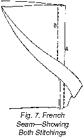French Seam
- For thin materials and dainty garments where an extremely neat and inconspicuous seam is required, the French seam is used. Be sure that you know how to make it perfectly, for you will find much occasion to use it in the following lessons.
- Make a plain seam on the right side of the material, basting first to be sure that the edges are even.
- Trim both edges to one-eighth of an inch, turn and baste so that the trimmed seam is entirely encased.
- Now stitch one-fourth or less from edge, being sure that no part of the trimmed edges inside are visible.
- The French seam is on the inside of the material, and no stitching whatever appears on the right side. French seams are hardly noticeable in fine material.
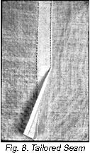Tailored Seam
- This type of seam is usually made on the machine. It is suitable for tailored blouses, skirts, coats and for underwear.
- Begin the same way as you would to make a flat fell seam, but on the right side of the material, stitching the turned-down edge to the right side.
- Very fine stitching and a careful regard for even edges are necessary in making this seam smartly tailored.
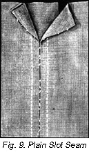Plain Slot Seam
- The slot seam is used for trimming purposes in medium weight material. It is often used on children's clothes. If made well it gives a neat, tailored appearance.
- So that you will get the correct method, I shall give you some definite measures to use. Then after you have mastered the procedure, you may vary the seam according to your needs and desires.
- Baste a plain half-inch seam to the wrong side. Press it open.
- Take a piece of material one inch wide and as long as the seam. Fold it through the center lengthwise. Place this piece to the wrong side of the seam so that the fold comes directly along the basted seam line.
- Baste this in place.
- On the right side of the garment make lines of stitching one-fourth inch on each side of the basted seam line.
- Remove bastings and overcast raw edges on under side.
- Press carefully.
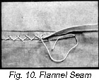Flannel Seams
- Make this seam exactly as you would the flat fell seam, but do not turn the edge under.
- Baste the seam down, make the wide part cover the narrow trimmed edge, but instead of hemming, use catch stitching to hold the seam flat against the material.
Lap Seam
- To avoid bulky seams, the lap seam is very frequently used in tailoring. Men's shirts and underwear, and women's tailored blouses are made with this type of seam.
- Take the two pieces of material you want to join together and turn the edge of one piece under about one-eighth of an inch. Crease the edge of the other piece of material over about one-eighth of an inch.
- Place the two edges of the material together so that one piece overlaps the other about one-quarter of an inch.
If you have done this correctly, the right side of one piece of material will be facing the wrong side of the other. - Now baste through the two pieces of material, first along the under crease and then along the upper crease.
- Stitch on the right side of the material along both lines of basting. You will find that this seam when finished has almost the same appearance as the flat fell seam.
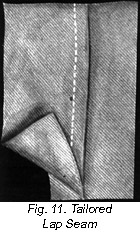Tailored Lap Seam
- Make a plain seam on the wrong side of the material, and press it to one side.
- On the right side of the material make a fold just deep enough to cover the seam.
- Baste and stitch on seam line. This is an excellent seam to use on underwear and on tailored blouses.
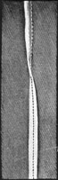Staying Bias Seams
- To prevent stretching, bias seams must be stayed. This is not a very difficult process, and although it may seem a bit confusing at first you will soon learn how to do it quickly and easily.
- As you make your plain seam, place a piece of tape on one side of the seam and baste through the three thicknesses.
- Stitch the seam and tape at one stitching.
- If the seam is to be a closed bound one, have the tape wide enough so the edge of it may be turned over the raw edge of the seam and stitched.
- If the seam is to be an open bound one, place a piece of tape on each side of the seam when you baste it. Stitch through all four thicknesses at one time. Press the seam open and turn the tape over the raw edges and stitch.
- If the seams are to be stitched as a trimming omit the tape when basting the seams. Make a plain seam and press it open. Use tape as wide as the open seam. Baste it flat on the wrong side of the garment, the center of the tape exactly over line of stitching. Baste on either edge.
- Turn to right side and machine stitch on each side of the seam through the three thicknesses.
- If you study this lesson carefully and learn how to make each seam you will have no trouble in joining materials together in later lessons—whether the materials be finest batiste or heaviest flannel. Practice each kind of seam until you can make it perfectly.
If you do not own a machine use small back stitches wherever machine stitching is recommended.